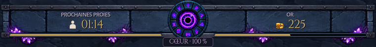
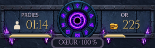
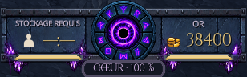
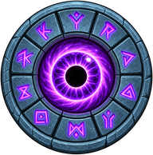
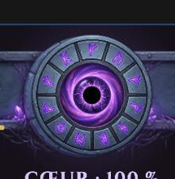
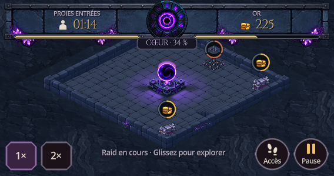
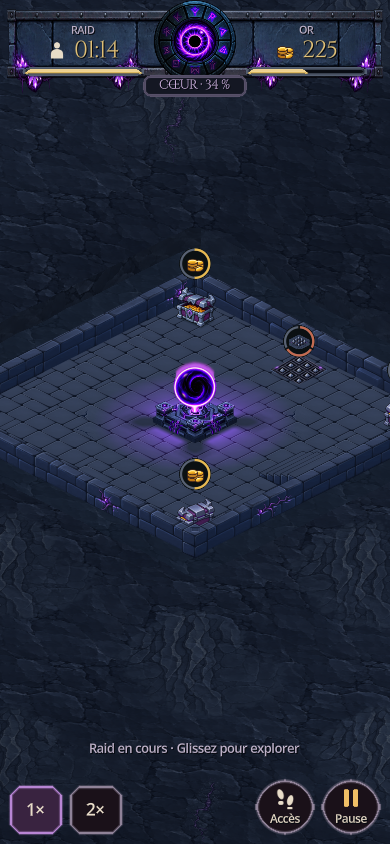

Captures réelles de Godot. L’encombrement reste de 96 unités, ou 84 en paysage court. Les valeurs sont centrées avec leur icône ; les jauges sont encastrées dans la traverse métallique. L’œil passe de 76 à 84 unités (64 à 72 en format court).



La petite taille accentuait l’effet de spirale, mais celle-ci existait dans le dessin source. L’iris a été retouché par ImageGen à partir de la référence. Pupille et reflet restent fixes ; une légère pulsation remplace la rotation du portail. Les runes continuent d’indiquer les paliers de vie.



